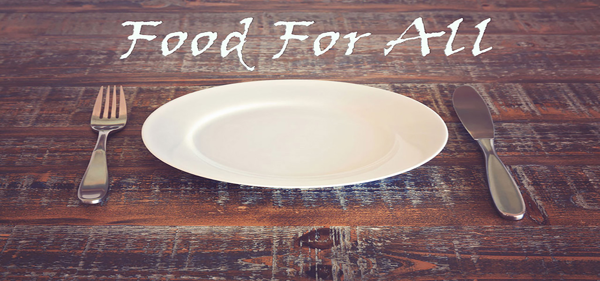

Food for all
Stop food wastage and help the hungry!
Food for all
Donate or Volunteer to transfer food

To stop food wastage and help the hungry
This app serves 3 purposes:
We are a bunch of developers that decided to shift the way the world deals with excess food by providing technology which allows us to channelise food better and feed the hungry.